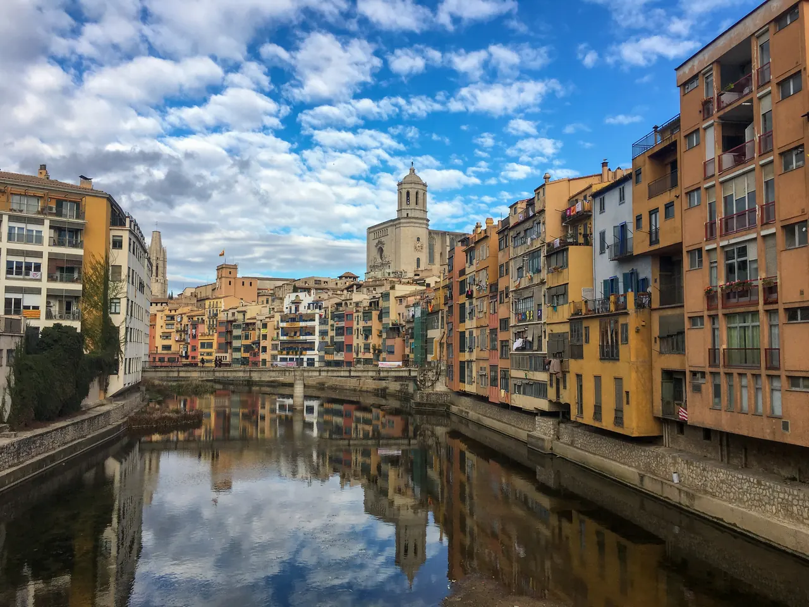
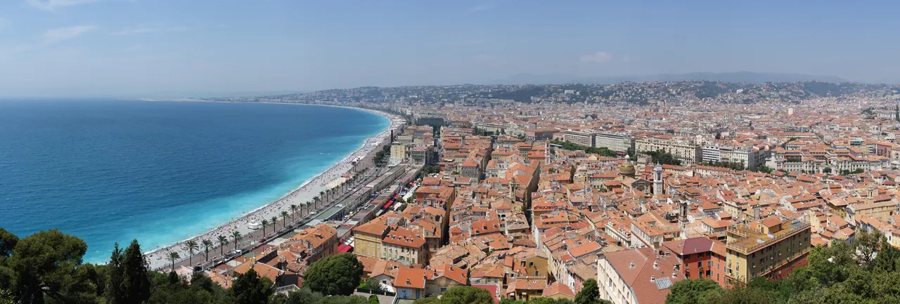
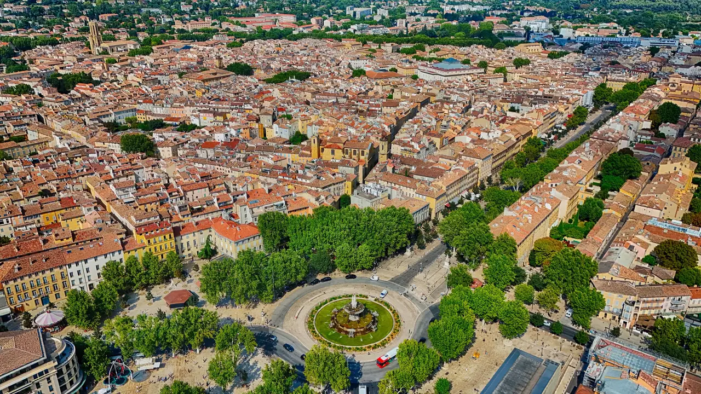
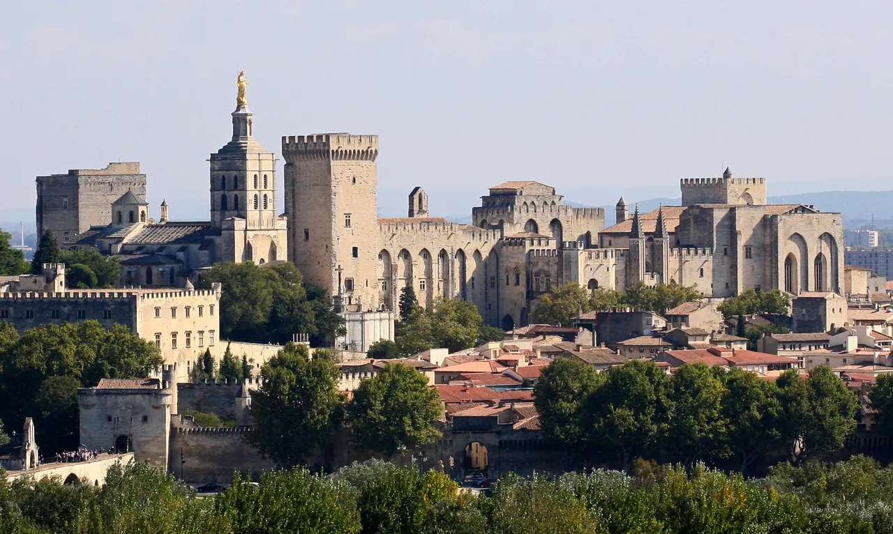
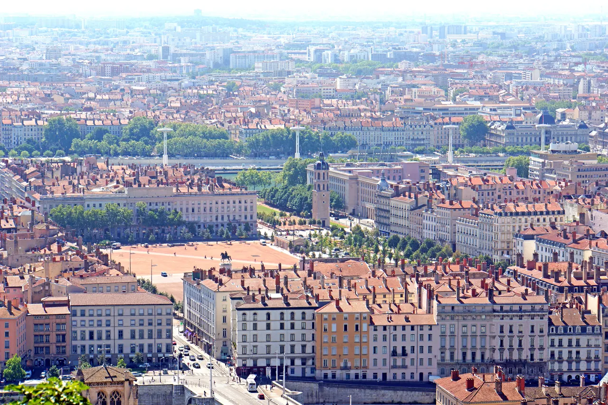
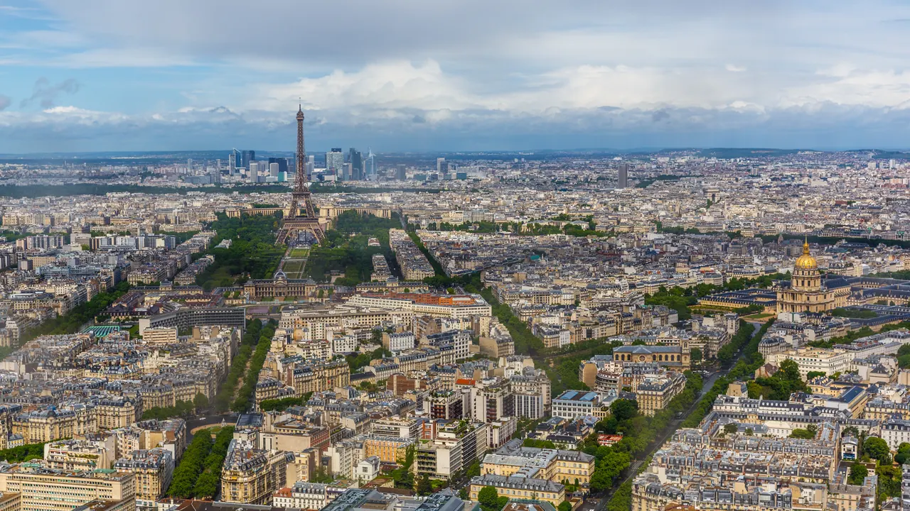

Barcelona
로마 도시와 중세 구도심, 19세기 계획도시와 모더니즘이 겹친 첫 대도시. 명소를 늘리기보다 도시의 층을 연결해 본다.
8개 거점을 이동 순서대로 놓았다. 각 지역에서 무엇을 보고 먹고 경험할지는 지역 페이지가 맡는다.
로마 도시와 중세 구도심, 19세기 계획도시와 모더니즘이 겹친 첫 대도시. 명소를 늘리기보다 도시의 층을 연결해 본다.

Bàscara 농가를 거점으로 삼아 Collioure·Cadaqués 해안과 Tossa·Pals·Peratallada 석조마을을 차로 잇는 구간이다. Bàscara 는 Girona 시내가 아니다 — 구시가지는 따로 왕복해야 하므로 도착일 일정을 고정하지 않는다.

니스에 거점을 두고 앙티브·칸, 모나코·망통, 가까운 해안 마을을 기차로 다녀오는 5박. 짐을 풀어놓고 생활 리듬을 회복하는 구간이다.

코트다쥐르를 떠나 프로방스 내륙으로 넘어가는 길에 유럽 최대급 석회암 협곡과 그 서쪽 관문의 도자기 마을에서 하루를 보낸다. 숙소는 현지에서 정하는 1박이고, 다음 날 Sainte-Croix 호수와 Valensole 고원을 거쳐 Aix로 내려간다.

니스 5박 뒤 프로방스 내륙의 생활 리듬으로 전환하는 거점이다. 시장·분수·대학·법원·카페가 압축된 걷기 좋은 생활도시이고, 대중교통으로 다녀오는 마르세유 하루가 붙는다.

Gordes를 2박 거점으로 삼아 남부 Luberon의 Lourmarin에서 오크르의 Roussillon과 Sénanque까지 잇는다. Optional 마을을 모두 빼도 핵심 풍경과 식사·휴식이 남는 구조다.

Gordes에서 물길 도시를 거쳐 아비뇽 생활권으로 옮기고, Saint-Rémy 수요시장과 Les Baux의 석회암 풍경을 본다. 이어지는 아비뇽·가르·아를 일정의 실행 콘텐츠는 각 Day 정본을 따른다.

프로방스의 자동차 여행을 마치고 철도·도보 중심의 도시생활로 전환하는 구간이다. 박물관을 많이 보는 대신 도시 지형, 르네상스 구시가지, 프레스킬의 광장, 비단노동자 동네, 시장과 부숑 음식을 경험한다.

43일 여정의 마지막 도시이자 하이라이트다. 관광지를 매일 정복하는 방식이 아니라 같은 빵집과 시장을 다시 찾고, 오전 운동과 세탁·장보기를 반복하며, 오후에 미술관·동네·도서관을 하나씩 보는 생활 실험으로 운영한다.